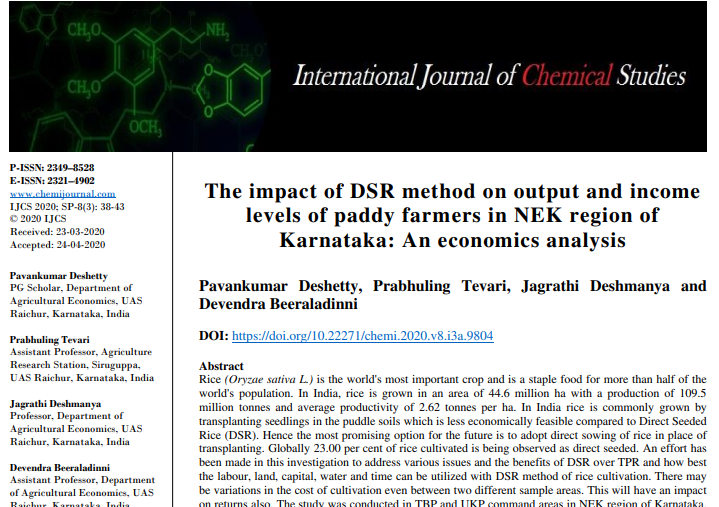
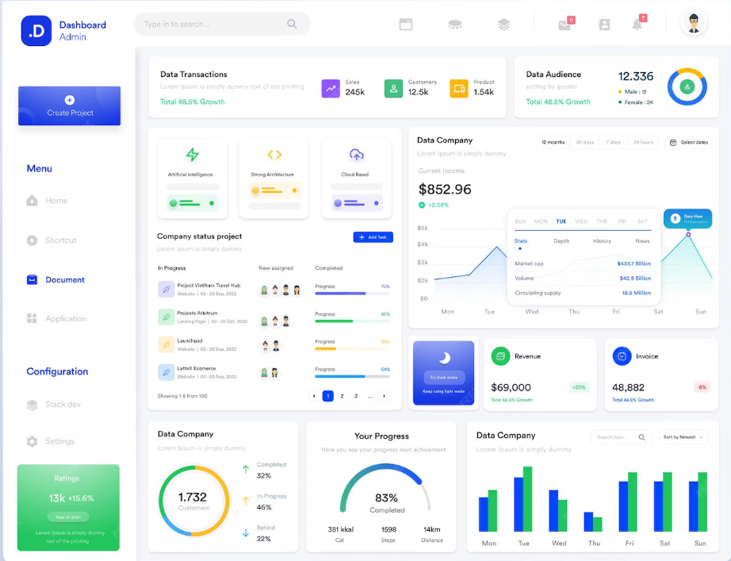

Pavankumar Deshetty

Pavankumar Deshetty
I'm a insight driven Data Analyst, currently working at Kalike - Tata Trusts helping in research and to build a modern, multi thematic, dashboard and automated reports.
In my free time, you can catch me working on AI and Automated analytics, preparing DPR, finding advancements in AI, or exploring best and new ways to solve same old problems of data.
About me
I am an athlete at heart with an entrepreneurial spirit, a knack for root cause identification, and a passion for data analysis. Born in Raichur, Karnataka. I made my move to Bangalore where I learnt more about data analysis and currently work as a Research Associate and Data Analyst at Kalike - Tata Trusts, alongside my many ongoing projects.
I am an atheist and not a blind follower of anything. I believe in questioning, understanding, and finding the truth through evidence and reason.
Outside of work I am an avid motorcyclist, actor, singer and a great cook. I love to travel and explore new places and cultures.

Stats
Sectors
8+Years of experience
8+Projects
15+Education
M.Sc. (Agri. Econ)
Specialized in Agricultural Economics with a focus on data modelling and market analysis.
B.Sc. (Agri.)
Foundation in Agricultural Sciences, providing domain expertise for AgTech analytics.
Certifications
Professional Certificate in Data Science
Focus: Python for Data Cleaning, Scraping, EDA, and Machine Learning Workflows.
Python Libraries for Data Analysis & Visualization
Analyze and visualize data using Plotly, Seaborn, Matplotlib, Pandas, and NumPy.
Certificate: UC-4dd8b449-e3e2-4a86-9d30-ca37dceb2479
5 Paisa API with Python
Learn How to use 5 Paisa API by python code for algorithmic trading.
Certificate: UC-28c33b6b-d55b-4652-a418-deca087c4777
Power BI: Visualization, Data Prep & DAX
Get Started Quickly with Visualization, Data Prep and DAX on Power BI.
Certificate: UC-d61e9f3f-d34f-48a9-a9e4-f689140cc964
SQL for Data Analysis
Solving real-world problems with data using advanced SQL techniques.
Certificate: View Certificate
ChatGPT & Prompt Engineering
Supercharge skills with plugins, code interpreter, and advanced prompt engineering.
Technical Skills & Knowledge Base
Data Science
Python, EDA, Feature Engineering
Python, EDA, Feature Engineering
- Languages & Libraries: Python (Pandas, NumPy, Scikit-learn, Statsmodels, Prophet)
- Core Concepts: Exploratory Data Analysis (EDA), Feature Engineering
Forecasting
Time Series, Trend/Seasonality
Time Series, Trend/Seasonality
- Time Series Models: Prophet, ARIMA, SARIMA
- Techniques: Trend/Seasonality Decomposition, Stationarity Testing (ADF)
Analytics
Regression, Hypothesis Testing
Regression, Hypothesis Testing
- Modeling: Regression (Linear/Multiple), Hypothesis Testing
- Performance Metrics: Sharpe Ratio, RMSE, MAPE
Visualization & Tools
Power BI, AWS EC2, Git
Power BI, AWS EC2, Git
- Visualization: Power BI, Matplotlib, Seaborn, Excel (Advanced)
- Tools & Platforms: SQL (Intermediate), Git, Docker, AWS EC2
Key Data Science Projects
Statistical Modeling
Time Series Forecasting
Time Series Forecasting
- Implemented Facebook Prophet and ARIMA models to forecast cyclical and seasonal data trends.
- Conducted stationarity testing (ADF) and model evaluation using RMSE and MAPE to ensure high-accuracy predictions.
- Built multiple regression models to identify key correlations within complex datasets.
Python Engine
Algorithmic Options Backtesting Engine
Algorithmic Options Backtesting Engine
- Architected a modular framework using Pandas and NumPy to simulate multi-leg NSE options strategies.
- Integrated transaction cost-adjusted PnL modeling and risk metrics including Sharpe Ratio and Maximum Drawdown.
- Deployed the engine on AWS EC2 using Docker for scalable strategy optimization.
Full-Stack & Analytics
Land Marketplace & Market Intelligence Platform
Land Marketplace & Market Intelligence Platform
- Designed a full-stack platform logic with SQL schema management for buyer/seller workflows.
- Developed Web Scraping scripts (Python) to extract real-time property data for valuation benchmarking.
- Created Power BI dashboards for land price discovery and competitive market analysis.
Experiences: 10 learnings in 8 Years
Jan 2024 - Present
Kalike - Tata Trusts
Research Associate
Research Associate
- Use of Excel, Python and Power BI for cleaning, processing and visualizing data.
- Owned data cleaning, analysis, visualization, and reporting pipelines for program monitoring and evaluations.
- Built dashboards, QA frameworks, and automated workflows to improve reporting accuracy and turnaround time.
- Field research, survey design, and impact documentation (raw data into insights).
- Supported website updates and social media operations to strengthen digital visibility.
Dec 2022 - Sep 2023
FactSuite
Data Analyst
Data Analyst
- Leveraged Excel, SQL, and Power BI for end-to-end data cleaning, transformation, validation, and visualization across business datasets.
- Conducted consumer behavior and demand analysis, applying time series techniques to identify seasonality patterns and optimize product selling timelines.
- Developed interactive Power BI dashboards to track KPIs, sales performance, and operational efficiency, presenting actionable insights to leadership teams.
- Performed root cause analysis to uncover labor-intensive workflows, recommending data-driven process improvements and automation strategies.
- Collaborated with cross-functional teams to align analytics outputs with business objectives, supporting strategic decision-making.
- Ensured data accuracy and integrity through systematic validation, documentation, and consistency checks.
Dec 2021 - Dec 2022
Karnataka Evaluation Authority
Research Fellow
Research Fellow
- Use of Excel, SQL and Power BI for cleaning, processing and visualizing data.
- Worked on quality assessment for evaluation reports and proposals on state government run programs (NFSM, BMTC, ESCOMS and IT).
- As a part of Karnataka Evaluation team, worked on Karnataka Economic Survey 2021-22 for data collection, preparation and reviewing of 20 draft reports.
- Collaborated with various stake holders over 15 state departments for presentation and report modification.
- Processing of raw data on 16 Sustainable Development Goals and Multi-dimensional Poverty Index to extract actionable insights for Karnataka Government.
Aug 2021 - Dec 2021
ISEC
Senior Research Fellow
Senior Research Fellow
- Primary research, leading team and collecting data by primary survey and knowledge sharing.
- Conducted primary research in Hassan and Madikeri on Institutional and Economic Analysis of Human-Wildlife Conflict Mitigation in the Indian Coffee Plantations.
- As a team lead, conducted primary survey, FGDs and In-depth Interviews on HWC and also on the NDDB, data processing, analysis and report preparation.
- Presentation of the results and findings to ICIMOD.
Oct 2020 - Jul 2021
Agriculture Produce Market
Supply Chain Developer
Supply Chain Developer
- Created a supply chain for organic fruits & vegetables with which even the smallest farmers were able to onboard and sell their produce to the customers online in Raichur.
- A successful journey on entrepreneurship and later it was handed onver to the farmers group and process was automated.
- It was my pro bono initiative to support local farmers and vendors.
Feb 2020 - Oct 2020
FKCCI
Social Media Manager & Data Analyst
Social Media Manager & Data Analyst
- Customer engagement, social media marketing and investment promotion task force in Karnataka.
- Led marketing team for FAFE Expo 2020 India's leading trade expo and exhibition.
- Data scraping and grouping of 18,000 plus MSME and large industries through social medium to support market analysis.
- Knowledge sharing and communicating with the various stakeholders and the participants of the FAFE.
Jun 2019 - Jan 2020
ISEC
Senior Research Fellow
Senior Research Fellow
- Successfully completed 3 projects pertaining to Animal husbandry & alternative incomes, Land utilization, Marketing of agriculture goods.
- As a front-runner with genuine devotion and with additional motivation, I was able to finish my field work on data collection and projects report writing work on schedule.
- The research investigated and examined issues relating to farming, marketing, extension of knowledge, technology adoption, and efficient utilization of resources.
Feb 2019 - May 2019
Olam International
Field Executive
Field Executive
- Educating farmers on use of internet and technology adoption in farming, value addition and market linkage.
- A farmer group was formed to share technology and machinery for reducing costs in farming.
May 2017 - Aug 2018
Krushi Coaching Classes
Teaching Experience
Teaching Experience
- Established a coaching center for the practical entrance exam for B.Sc Agriculture
- Guided more than 300+ PUC science passed students.
- Resulting in securing 20 seats by scoring highest in practical exams every year.
Sep 2016 - Nov 2016
UAS Raichur
Rural Ag. Work Experience
Rural Ag. Work Experience
- Staying in rural village, observing the issues and identification of hidden problems, and communicating to farmers as well as subject expert specialist.
- Suggested watermelon seed producing farmers to sell watermelon juice after extracting seeds, which yielded him earning an additional 2,500 Rs/Acre.
My work




Get in touch
Have a project for me? I'd love to hear from you.